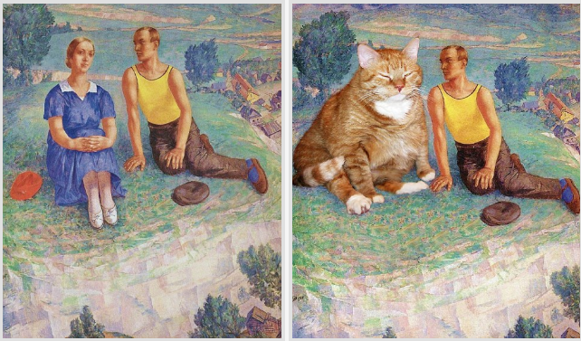
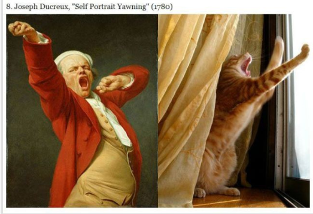

Mona Lisa e de departe cea mai cunoscuta pictura. Zambetul ei enigmatic a facut-o cea mai reinterpretata si caricaturizata si parodiata pictura din lume. Rusoaica Svetlana Petrova s-a gandit sa o foloseasca drept model pe Zarahustra, pisica ei grasa, in diverse picturi celebre.
In mod ciudat apropierea dintre barbat si pisica pare mai mare decat cea dintre barbatul si femeia din pictura adevarata. Ori femeia nu il intereseaza, ori pisica e atat de grasa incat abia incape in pictura, ori Svetlana Petrova si-a dat seama ca personajul e un mare iubitor de pisici.
Ce e tipic pisicilor daca nu lenea? Statul degeaba tot timpul, dar intr-o oboseala continua... adevarata arta!
Poate 30 de cărți celebre de citit într-o viață sunt puține. Ai putea să întrebi cu o sprânceană ridicată: ”Doar 30?” și să îți dăm dreptate. Am putea vorbi despre sute, poate mii.Atât de multe povești, atât de multe personaje care ne-au marcat, autori pe care nu îi vom uita.
Vom vorbi despre acele cărți care ne-au marcat adolescența și studenția, acele carti pe care le-ai citit și recitit de multe ori.În acest articol vei găsi cărți de sufet, cărți care ți-au furat multe nopți, cărți care îți amintesc de persoane dragi sau locuri de poveste. Dar, s-ar putea să descoperi cu uimire și alte cărti pe care le vei savura cu aceeași plăcere.